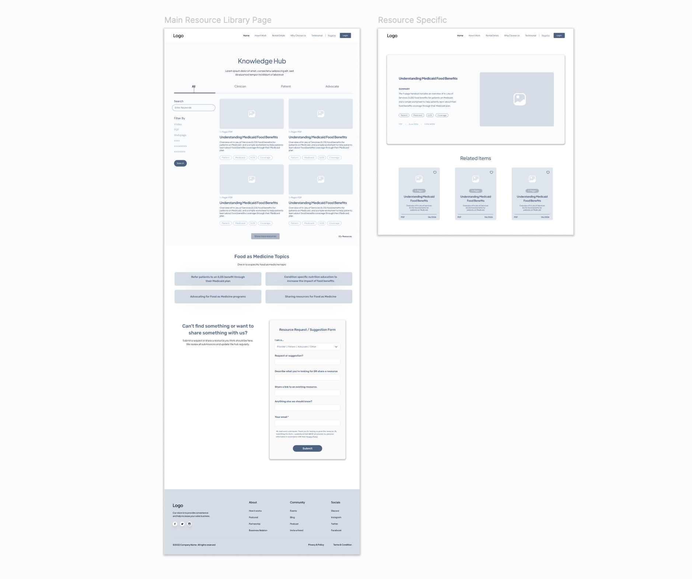
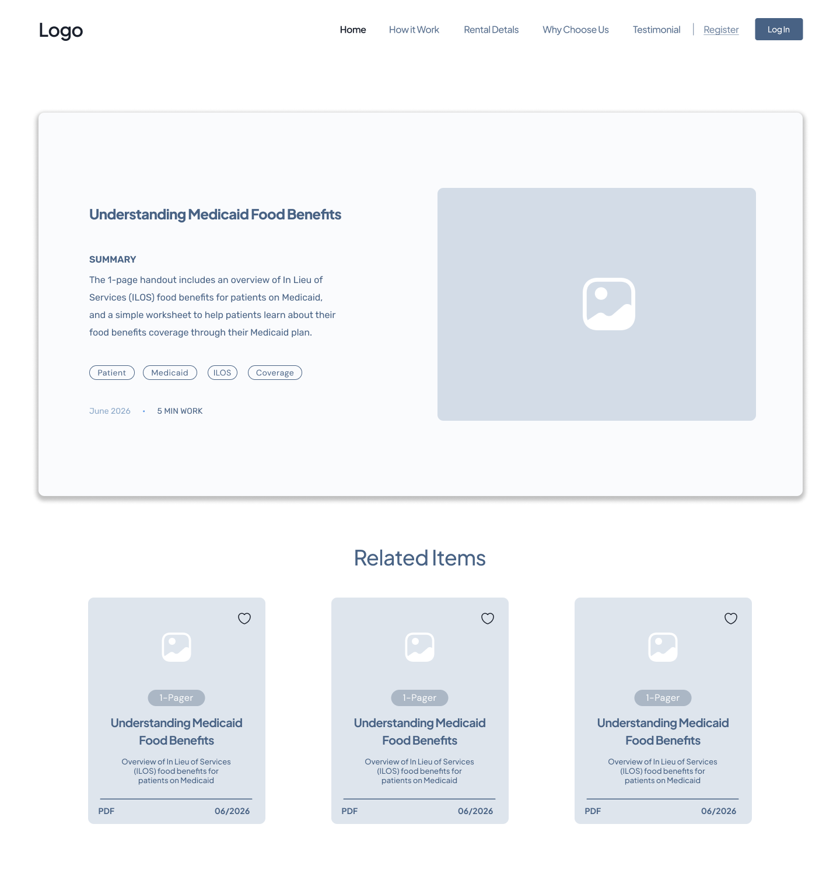
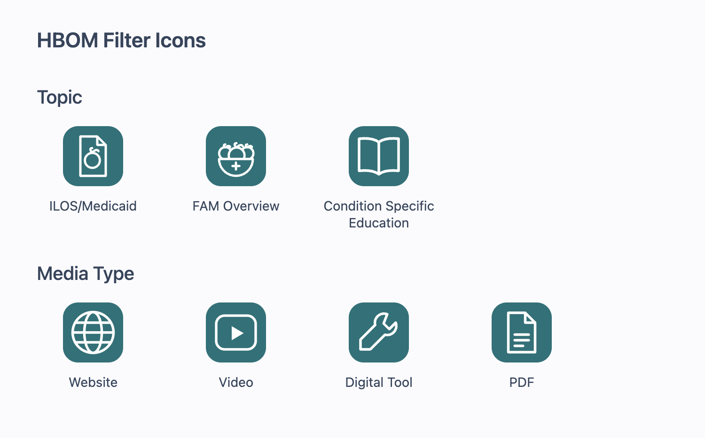
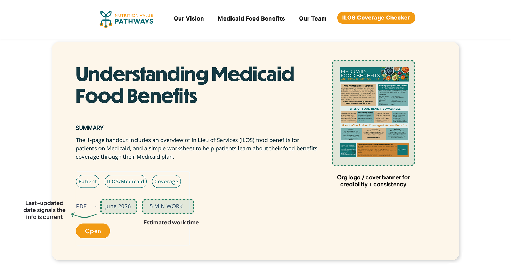
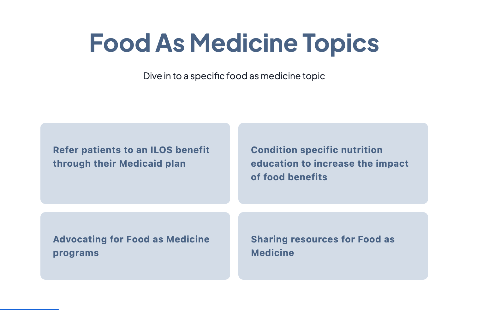

NVP Knowledge Hub
A searchable food-as-medicine resource hub for patients, providers, and advocates.
What did I do?
I owned the hub end to end: research, IA, filter logic, wireframes, and the Webflow build on top of the existing nutrivp.org landing page.
What is Food as Medicine (FAM)?
FAM and ILOS let Medicaid cover food benefits, but coverage varies by plan and region, and nutrivp.org was only a landing page, with no resource library behind it.
The Problem
No central, filterable library existed. What did exist skewed toward providers, leaving the question patients actually have, what does my plan cover, with nowhere to go.
How might we
Help patients and providers find the right food-as-medicine resource, without getting lost in content meant for someone else?
01
Research
A qualitative competitive and domain audit, not a formal usability study.
I reviewed existing food-as-medicine hubs, Tufts Food is Medicine, Healthcare x Food from the American Heart Association, and the HHS/ODPHP FAM hub, alongside narrative sites like StoryCorps and the Obama Presidency Oral History Project for tone and content organization.
Segmentation gap
User-type segmentation was missing from most FAM sites I reviewed, an opening for the hub to lead with Provider, Patient, and Advocate as first-class categories.
Fewer, better filters
Simple one- or two-filter systems worked best at the resource counts these hubs actually had, rather than dense filter panels built for a scale they hadn't reached.
Scannability
Media-type icons made resource lists easier to scan at a glance, before a visitor commits to opening anything.


Intended Success Metrics
The hub hasn't launched publicly yet, so these are planned measures, not results.
Findability
How fast a visitor reaches a relevant resource, via Webflow analytics and post-launch walkthroughs.
Return usage
Whether visitors come back rather than treating the hub as a one-time lookup.
Request-form volume
A proxy for how incomplete the library still feels to visitors.
02
Solution
A phased, modular system built to be maintained by HBOM without a designer.
IA & entry point
The hub is user-type-first, splitting into Provider, Patient, and Advocate at the entry point so patients never have to wade through content written for clinicians to find their own.
Filter system
Two filter panels replaced the earlier vanity filters (All, Coverage, Our Favorites): Topic (ILOS/Medicaid, FAM Overview, Condition Specific Education) and Media type (Video, PDF, Website, Digital tool). The library holds around 10 to 20 resources today, but Topic and Media type live in separate CMS Collections so the system can scale past 50 without a rebuild.

Custom iconography
I designed the ILOS/Medicaid and FAM icons with the client: ILOS as a prescription mark with a food element standing in for the pill, FAM as a bowl marked with a medical cross.
Resource card & detail page
One card design maps to a small set of CMS fields, name, type, description, tags, thumbnail, with density variants so HBOM can add resources without a designer. Thumbnails use the provider's logo where one exists, like Mom's Meals or Low Carb Jumpstart, and fall back to a PDF-preview image otherwise, as with the Understanding Medicaid Food Benefits one-pager.

Video, everywhere or nowhere
Constraint
Webflow wouldn't let me choose, per resource, between embedding a video and linking out. Whatever I picked had to apply identically across every resource in the library.
My response
I chose linking to the source page over embedding, for consistency across resource types and lower long-term maintenance for HBOM.
Request flow
"I'm looking for something" and "I want to suggest a resource" used to be separate asks. I combined them into one toggle form, reviewed by HBOM before anything publishes.
Food As Medicine Topics
A row of entry tiles gives visitors a second way in, by topic rather than by user type, for people who arrive already knowing what they're looking for.

04
Impact
Built and handed off; public launch pending.
The hub is built in Webflow and handed off to HBOM. It hasn't launched publicly yet, so I'm not claiming usage numbers here, only that the system is ready for HBOM to populate and publish on their own timeline.
Alongside the hub, I also produced a 30-second patient-story reel, Heart-to-Heart, for the Michigan Cardiac Rehab Network.
Reflection
Constraints
Webflow's CMS model shaped more decisions than I expected, especially the all-or-nothing video/link choice and the need to split Categories and Media type into separate Collections early.
What I'd improve
I'd pressure-test the filter taxonomy against a larger resource set before launch, since ~10 to 20 items can hide gaps that only show up once the library grows toward 50.
Next steps
HBOM populates the remaining resource entries, reviews incoming requests through the new form, and sets a public launch date.